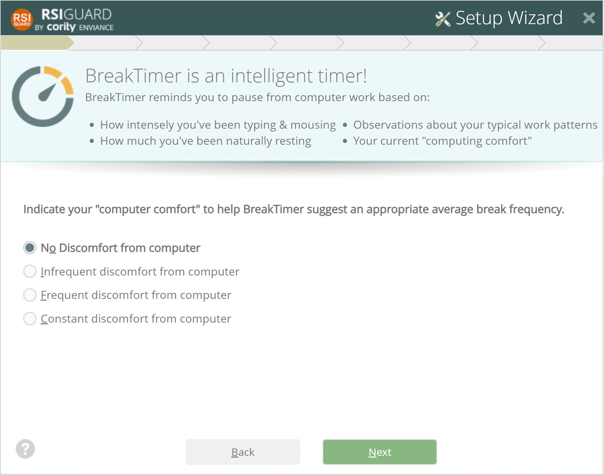

This screen introduces you to the concept of the RSIGuard BreakTimer.
This important feature of RSIGuard is very different from other break reminder tools. One of the biggest differences is that the method for determining when to takes breaks is based on your use of the keyboard and mouse, natural breaks, and time spent working. This means that breaks are suggested at more logical times than a typical timer.
When BreakTimer asks you to take a break, you know that you really need the rest, even if you feel too busy!
Setup Tip:
